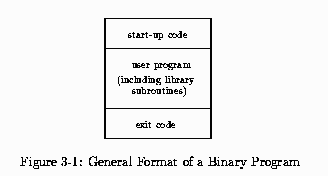
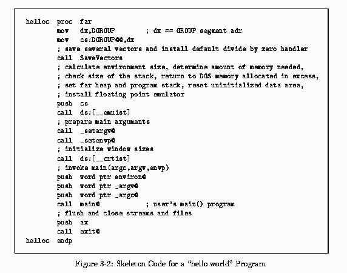
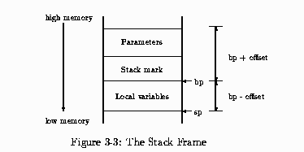
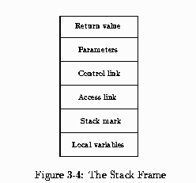
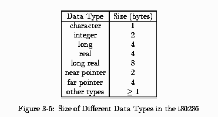
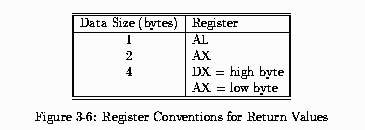
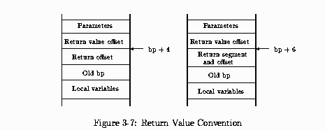
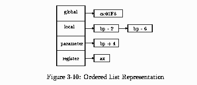
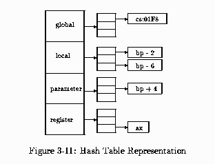
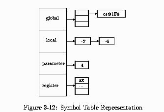

All contents of this page are Copyright 1994 Cristina Cifuentes and the Queensland University of Technology
Chapter 3
Run-time Environment
Before considering decompilation, the relations between the static binary code of the pro-
gram and the actions performed at run-time to implement the program are presented.
The representation of objects in a binary program differs between compilers; elementary
data types such as integers, characters, and reals are often represented by an equivalent
data object in the machine (i.e. a fixed size number of bytes), whereas aggregate objects
such as arrays, strings, and structures are represented in various different ways.
Throughout this thesis, the word subroutine is used as a generic word to denote a procedure
or a function; the latter two words are used only when there is certainty as to what the
subroutine really is, that is, a subroutine that returns a value is a function, and a subroutine
that does not return a value is a procedure.
3.1 Storage Organization
A high-level language program is composed of one or more subroutines, called the user sub-
routines. The corresponding binary program is composed of the user subroutines, library
routines that were invoked by the user program, and other subroutines linked in by the
linker to provide support for the compiler at run-time. The general format of the binary
code of a program is shown in Figure 3-1. The program starts by invoking compiler start-up
subroutines that set up the environment for the compiler; this is followed by the user's main
program subroutine, which invokes library routines linked in by the linker; and is finalized
by a series of compiler subroutines that restore the state of the machine before program
termination.

For example, a ``hello world'' C program compiled with Borland Turbo C v2.01 has over 25
different subroutines. The s tart-up code invokes up to 16 different subroutines to set up
the compiler's environment. The user's main program is composed of one procedure. This
procedure invokes the printf() procedure which then invokes up to 8 different subroutines
to display the formatted string. Finally, the exit code invokes 3 subroutines to restore the
environment and exit back to DOS. Sample skeleton code for this program is shown in
Figure 3-2.

In a binary program, subroutines are identified by their entry address; there are no names
associated with subroutines, and it is unknown whether the subroutine is a procedure or a
function before performing a data flow analysis on the registers defined and used by these
subroutines. It is said that a subroutine that invokes another subroutine is the caller, and
the invoked subroutine is the callee.
3.1.1 The Stack Frame
Each subroutine is associated with a stack frame during run-time. The stack frame is the
set of parameters, local variables, and return address of the caller subroutine, as shown in
Figure 3-3. The parameters in the stack frame represent the actual parameters of a partic-
ular invocation of the subroutine: information on the formal parameters of the subroutine
are not stored elsewhere in the binary file. The stack mark represents the return address of
the caller (so that control can be transferred to the caller once the callee is finished), and
the caller's frame pointer (register bp in the Intel architecture), which is a reference point
for offsets into the stack frame. The local variables represent the space allocated by the
subroutine once control has been transferred to it; this space is available to the subroutine
only while it is active (i.e. not terminated).

Once the frame pointer has been set (i.e. register bp), positive offsets from the frame
pointer access parameters and the stack mark, and negative offsets access local variables.
The convention used in diagrams relating to the stack frame is as follows: the stack grows
downwards from high to low memory, as in the Intel architecture.
The stack frame may also contain other fields, as shown in Figure 3-4. These fields are not
used by all languages nor all compilers[ASU86a]. The return value field is used in some
languages by the callee to return the value of a function back to the caller; these values are
more often returned in registers for efficiency. The control link points to the stack frame
of the caller, and the access link points to the stack frame of an enclosing subroutine that
holds non-local data that is accessible from this subroutine.
3.2 Data Types
Data objects are normally stored in contiguous memory locations. Elementary data types
such as characters, integers, and longs, can be held in registers while an operation is per-
formed on them. Aggregate data types such as arrays, strings, and records, cannot be held
in registers in their entirety because their size is normally beyond the size of a register,
therefore it is easier to access them through a pointer to their starting address.

The sizes of different data types for the i80286 architecture are shown in Figure 3-5. This
machine has a word size of 16 bits. Sizes are given in 8-bit bytes.

3.2.1 Data Handling in High-level Languages
Aggregate data types are handled in several different ways by different compilers. This
section describes different formats used by C, Pascal, Fortran, and Basic compilers,
according to [Mic87].
Array
An array is a contiguous piece of memory that holds one or more items of a certain type.
Arrays are implemented in memory as a series of rows or columns, depending on the order
used by the language:
Row-major order: the elements of a multidimensional array are stored by row order;
that is, one row after the other. This order is used by C and Pascal compilers.
Column-major order: the elements of a multidimensional array are stored in column
order rather than row order. This order is used by Fortran and Basic compilers. Some
Basic compilers have a compile option to use row-major order.
In most languages, the size of the array is known at compile time; this is the case of C,
Pascal and Fortran. Basic allows for run-time declared array sizes, therefore an array needs
to have an array-descriptor to hold the size of the array and a pointer to the physical
location in memory where the array is stored.
String
A string is a sequence of characters. Different languages use different representations for a
string, such as the following:
C format: a string is an array of bytes terminated by a null character (i.e. 0).
Fortran format: a string is a series of bytes at a a fixed memory location, hence no
delimiter is used or needed at the end of the string.
Pascal format: common Pascal compilers have 2 types of strings: STRING and
LSTRING. The former is a fixed-length string and is implemented in the Fortran
format. The latter is a variable-length string and is implemented as an array of
characters that holds the length of the string in the first byte of the array. Standard
Pascal does not have a STRING or LSTRING type.
Basic format: a string is implemented as a 4-byte string-descriptor; the first 2 bytes
hold the length of the string, and the next 2 bytes are an offset into the default data
area which holds the string. This area is assigned by Basic's string-space management
routines, and therefore is not a fixed location in memory.
Record
A record is a contiguous piece of memory that holds related items of one or more data types.
Different names are used for records in different languages; struct in C, record in Pascal,
and user-defined type in Basic. By default, C and Pascal store structures in unpacked
storage, word-aligned, except for byte-sized objects and arrays of byte-sized objects. Basic
and some C and Pascal compilers store structures in packed storage.
Complex Numbers
The Fortran COMPLEX data type stores floating point numbers in the following way:
COMPLEX*8: 4 bytes represent the real part, and the other 4 bytes represent the
floating point number of the imaginary part.
COMPLEX*16: 8 bytes represent the real part, and the other 8 bytes the imaginary
part.
Boolean
The Fortran LOGICAL data type stores Boolean information in the following way:
LOGICAL*2: 1 byte holds the Boolean value (0 or 1), and the other byte is left unused.
LOGICAL*4: 1 byte holds the Boolean value, and the other 3 bytes are left unused.
3.3 High-Level Language Interface
Compilers of high-level languages use a series of conventions to allow mixed-language
programming, so that a program can have some subroutines written in one language, and
other subroutines written in a different language, and all these subroutines are linked in
together in the same program. The series of conventions relate to the way the stack frame
is set up, and the calling conventions used to invoke subroutines.
3.3.1 The Stack Frame
The stack mark contains the caller's return address and frame pointer. The return address
varies in size depending on whether the callee is invoked using a near or far call. Near calls
are within the same segment and therefore can be referenced by an offset from the current
segment base address. Far calls are in a different segment, so both segment and offset of
the callee are stored. For a 2-byte machine word architecture, the near call stores 2 bytes
for the offset of the caller, whereas the far call stores 4 bytes for the segment and offset
of the caller. Register bp is used as the frame pointer, the contents of the caller's frame
pointer is pushed onto the stack at subroutine entry so that it can be restored at subroutine
termination.
Entering a Subroutine
Register bp is established as the frame pointer by pushing its address onto the stack (i.e.
storing the frame pointer of the caller on the stack), and copying the current stack pointer
register (sp) to bp. The following code is used in the i80286 architecture:
push bp ; save old copy of bp
mov bp, sp ; bp == frame pointer
Allocating Local Data
A subroutine may reserve space on the stack for local variables. This is done by decrementing
the contents of the stack register sp by an even amount of bytes. For example, to allocate
space for 2 integer variables, 4 bytes are reserved on the stack:
sub sp, 4
Preserving Register Values
The most widely used calling convention for DOS compilers demands that a subroutine
should always preserve the values of registers si, di, ss, ds, and bp. If any of these registers
is used in the callee subroutine, their values are pushed onto the stack, and restored before
subroutine return. For example, if si and di are used by a subroutine, the following code
is found after local data allocation:
push si
push di
Accessing Parameters
Parameters are located at positive offsets from the frame pointer register, bp. In order to
access a parameter n, the offset from bp is calculated by adding the size of the stack mark,
plus the size of the parameters between bp and parameter n, plus the size of parameter n.
Returning a Value
Functions returning a value in registers use different registers according to the size of the
returned value. Data values of 1 byte are returned in the al register, 2 bytes are returned
in the ax register, and 4 bytes are returned in the dx:ax registers, as shown in Figure 3-6.

Larger data values are returned using the following conventions:
Function called by C: the callee must allocate space from the heap for the return value
and place its address in dx:ax.
Function called by Pascal, Fortran or Basic: the caller reserves space in the stack
segment for the return value, and pushes the offset address of the allocated space on
the stack as the last parameter. Therefore, the offset address of the return value is at
bp + 6 for far calls, and bp + 4 for near calls, as shown in Figure 3-7.

Exiting the Subroutine
The stack frame is restored by popping any registers that were saved at subroutine entry,
deallocating any space reserved for local variables, restoring the old frame pointer (bp), and
returning according to the convention in use.
C convention: the caller adjusts the stack for any parameters pushed on the stack. A
ret instruction is all that is needed to end the subroutine.
Pascal, Fortran, Basic convention: the callee adjusts the stack by cutting back the stack
with the required number of parameter bytes. A ret n instruction is used, where n is
the number of bytes of the parameters.
For example, the following code restores the registers di and si from the stack, deallocates
the space of the local variables by copying bp to sp, restores the frame pointer by popping
bp from the stack, and returns using the C convention:
pop di ; restore registers
pop si
mov sp, bp ; deallocate local variables
pop bp ; restore bp
ret
3.3.2 Parameter Passing
Three different methods are used to pass parameters on the Intel architecture under the
DOS operating system; C, Pascal, and register calling conventions. Mixtures of these calling
conventions are available in other operating systems and architectures. For example, in
OS/2, the standard call uses C ordering to pass parameters, but the callee cuts back the
parameters from the stack in system calls.
C Calling Convention
The caller is responsible for pushing the parameters on the stack, and restoring them
after the callee returns. The parameters are pushed in right to left order, so that
a variable number of parameters can be passed to the callee. For example, for a C
function prototype void procX (int, char, long), and a caller procedure that invokes
the procX() procedure:
procN()
{ int i; /* bp - 8 */
char c; /* bp - 6 */
long l; /* bp - 4 */
procX (i, c, l);
}
the following assembler code is produced:
push word ptr [bp-2] ; high word of l
push word ptr [bp-4] ; low word of l
push [bp-6] ; c
push word ptr [bp-8] ; i
call procX ; call function
add sp, 8 ; restore the stack
Note that due to word alignment, the character c is stored as 2 bytes on the stack even
though its size is one byte only.
Pascal Calling Convention
The caller is responsible for pushing the arguments on the stack, and the callee adjusts the
stack before returning. Arguments are pushed on the stack in left to right order, hence
a fixed number of arguments are used in this convention. For the previous example, the
calling of procX (i, c, l) produces the following assembler code in Pascal convention:
push word ptr [bp-8] ; i
push [bp-6] ; c
push word ptr [bp-2] ; high word of l
push word ptr [bp-4] ; low word of l
call procX ; call procX (procX restores stack)
Register Calling Convention
This convention does not push arguments on the stack but passes them in registers, therefore
the generated code is faster. Predetermined registers are used to pass arguments between
subroutines, and different registers are used for different argument sizes. Figure 3-8 shows
the set of registers used by Borland Turbo C++ [Bor92]; a maximum of 3 parameters can
be passed in registers. Far pointers, unions, structures, and real numbers are pushed on the
stack.

3.4 Symbol Table
A decompiler uses a symbol table to store information on variables used throughout the
program. In a binary program, variables are identified by their address; there are no names
associated with variables. Variables that have a physical memory address are global vari-
ables; their segment and offset are used to access them. Variables that are located at a
negative offset from the frame pointer are local variables to the corresponding stack frame's
subroutine, and variables at positive offsets are actual arguments to the subroutine. Since
register variables are used by compilers for efficiency purposes, all registers are also con-
sidered variables initially; further analysis on registers determines whether they represent
register variables or not (see Chapter 5, Section 5.2.9). Variables are assigned unique names
during code generation, as explained in Chapter 7.
The symbol table must be able to provide information on an entry efficiently, and handle a
varying number of variables; hence, a symbol table that grows dynamically if necessary is
desirable. The performance of the symbol table is measured in terms of the time taken to
access an entry and insert a new item to the table.
3.4.1 Data Structures
Symbol tables are represented by a variety of data structures. Some are more efficient than
others, at the expense of more coding. To illustrate the differences between the various data
structures, let us assume the following data items are to be placed in the symbol table:
cs:01F8 ; global variable
bp + 4 ; parameter
bp - 6 ; local variable
ax ; register ax
bp - 2 ; local variable
Unordered List
An unordered list is a linked-list or an array of data items. Items are stored in the list in
a first-in basis (i.e. on the next available position). An array implementation presents the
limitation of size; these limitations are avoided by the use of a linked-list implementation.
An access to this symbol table, for a list of n items is O(n). Figure 3-9 shows the list built
for our example.

Ordered List
An ordered list is easier to access, since not all items of the list need to be checked to
determine whether an item is already in the list or not. Ordered lists can be searched using
a binary search, which provides an access time of O(log n). Insertion of an item is costly,
since the list needs to remain ordered.
Since there are different types of variables in a binary program, and these items are identified
in a different way based on their type, an ordering within a type is possible, but the
four different types must be access independently. Figure 3-10 shows the ordered list
representation of our example: a record that determines the type of the data item is used
first, and each of the data types has an ordered list associated with it.

Hash Table
A hash table is a mapping between a fixed number of positions in a table, and a possibly
large number of variables. The mapping is done via a hashing function which is defined
for all possible variables, can be computed quickly, provides an uniform probability for all
variables, and randomizes similar variables to different table locations.
In open hashing, a hash table is represented by an array of a fixed size, and a linked-list
attached to each array position (bucket). The linked-list holds different variables that hash
to the same bucket. Figure 3-11 shows the hash table built for our example; as for ordered
lists, a record which determines the type of the variable is used first, and a hash table is
associated with each different variable type.

Symbol Table Representation for Decompilation
A combination of the abovementioned methods is used for the purposes of decompilation.
The symbol table is defined in terms of the different types of variables; global, local, pa-
rameter, and register. Each of these types is implemented in a different way. For global
variables, since their address range is large, a hash table implementation is most suited. For
local variables and parameters, since these variables are offsets from the frame pointer, and
are always allocated in an ordered way (i.e. there are no ``gaps'' in the stack frame), they
are implemented by an ordered list on the offset; the register bp does not need to be stored
since it is always the same. Finally, for registers, since there is a fixed number of registers,
an array indexed by register number can be implemented; array positions that have an as-
sociated item represent registers that are defined in the symbol table. This representation
is shown in Figure 3-12.

Symbol tables are widely discussed in the literature, refer to [ASU86a, FJ88a, Gou88] for
more information on symbol tables from a compiler point of view.
Home * Tools * 95/NT Tech Info * Links